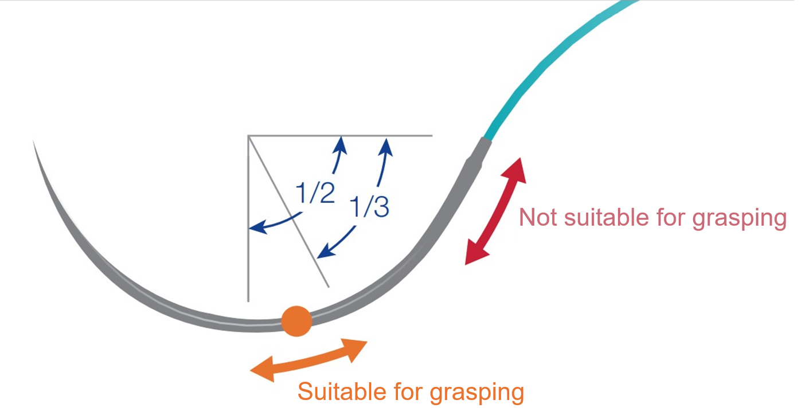
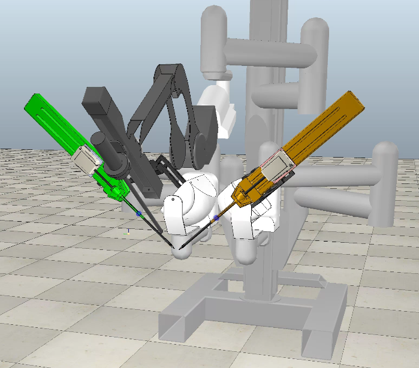
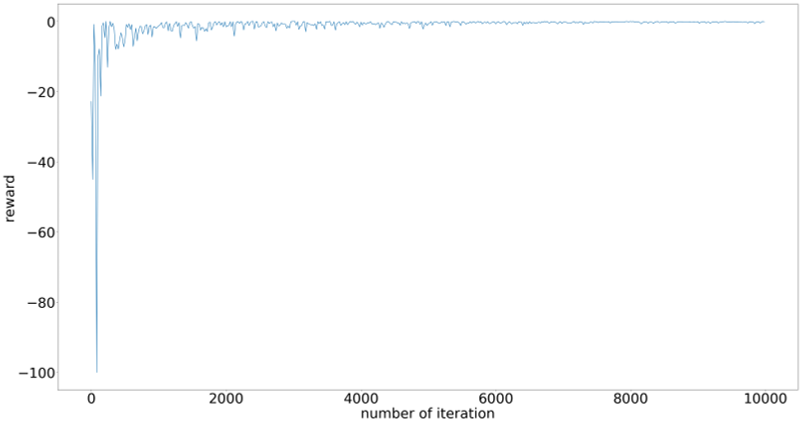
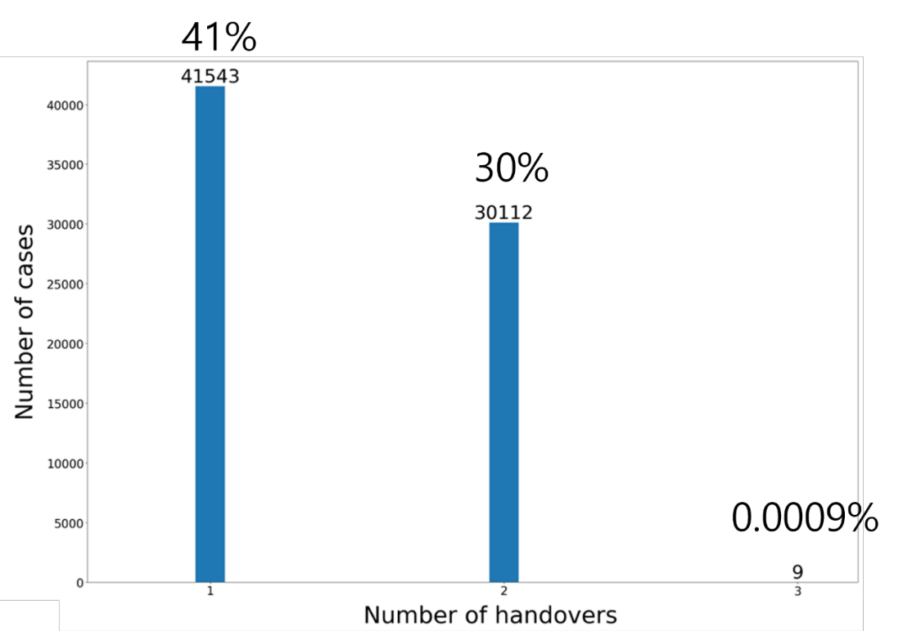
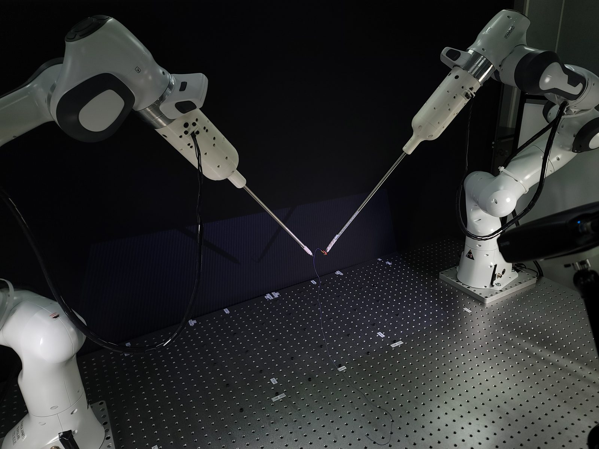

연구 개요: 강화학습 기반 양팔 수술 로봇의 봉합 바늘 재파지¶
석사과정에서 양팔 수술 로봇의 봉합 바늘 재파지(regrasping)를 위한 강화학습 알고리즘을 개발했습니다. 한쪽 기구에서 반대쪽 기구로 바늘을 전달하는 handover를 반복해 목표 파지 위치와 방향에 도달하되, 전달 횟수를 최소화하는 것이 목표였습니다. 최종 정책은 시뮬레이션에서 handover 3번 이내로 목표 자세에 도달했습니다. 실제 양팔 로봇에서는 캘리브레이션과 RGBD 카메라 기반 바늘 추적을 적용해 성공률을 0%에서 69%까지 끌어올렸습니다. 이 글에서는 이 문제가 왜 중요한지, 강화학습(RL) 문제로 어떻게 바꿨는지, 결과가 어땠는지를 정리합니다. 이후 글에서는 각 부분의 구현 과정과 해결하기 어려웠던 문제를 다룹니다.
양손 물체 전달에서의 파지 위치와 방향 선택¶
오른손으로 글씨를 쓰려는데 펜이 왼손 가까이에 있다고 해 보겠습니다. 왼손으로 펜을 집어 오른손에 넘길 때는 오른손이 받아서 바로 쓸 수 있도록 잡을 위치와 방향을 맞춥니다.
이 짧은 동작 안에는 처음에 어디를 잡을지, 어떤 방향으로 넘길지라는 두 가지 판단이 들어 있습니다. 이 프로젝트에서는 로봇도 봉합 바늘의 파지 위치와 전달 방향을 스스로 선택하도록 했습니다.
봉합 과정의 바늘 재파지¶
실제 봉합에서는 바늘을 수시로 다시 잡습니다. 니들 드라이버가 바늘 호의 알맞은 지점을 알맞은 각도로 물고 있어야 조직에 바늘을 제대로 넣을 수 있기 때문입니다. 잡은 자세가 안 좋으면 반대쪽 기구로 바늘을 넘겼다가 더 좋은 자세로 다시 받아 옵니다.
바늘을 어떻게 잡아야 하는지는 수술 교육 자료에 잘 나와 있습니다.



봉합은 수술 중 반복이 많고 시간이 오래 걸리는 작업이어서 자동화가 필요한 작업 중 하나입니다. 바늘을 원하는 위치에 삽입하려면 먼저 올바른 자세로 잡아야 하므로, handover도 함께 해결해야 합니다.
재파지 계획에 강화학습을 적용한 이유¶
테이블 위의 바늘은 어떤 자세로든 놓일 수 있습니다. 자세마다 어느 팔로 어느 지점을 먼저 잡아야 handover를 가장 적게 하고 목표 자세까지 갈 수 있을까요? 이걸 해석적으로 풀려면 여러 기하학적·기구학적 조건을 고려해야 하고, 로봇이나 작업공간, 목표가 바뀔 때마다 처음부터 다시 따져야 합니다.
강화학습은 접근 방식이 다릅니다. 규칙을 하나하나 짜는 대신 로봇이 무엇을 관찰하고 무엇을 할 수 있는지를 정해 주고, handover마다 비용을 매깁니다. 그러면 로봇이 시행착오를 거쳐 목표 자세까지 가는 가장 짧은 경로를 스스로 찾습니다. 처음에는 단순한 off-policy 알고리즘인 Q-learning을 썼습니다. off-policy라는 건 로봇이 직접 만들지 않은 데이터, 예를 들어 사람의 시연으로도 학습할 수 있다는 뜻입니다. 향후 사람의 시연을 활용할 가능성을 고려해 이 특성에 주목했습니다.
시스템 구성과 강화학습 문제 정의¶
로봇은 da Vinci Research Kit(dVRK)의 patient-side manipulator 두 대(PSM1, PSM2)를 썼고, 시뮬레이션은 CoppeliaSim에서 했습니다.

RL 문제를 간단히 정리하면 아래와 같습니다(자세한 건 2편에서 다룹니다).
| 정의 | |
|---|---|
| State | 바늘을 어떻게 잡고 있는지: 호 위의 파지 지점 × jaw의 파지 각도 × 어느 손 |
| Action | 다음 state(지점, 각도, 손)와 handover할 때의 바늘 방향 |
| Reward | 목표 자세에 도달할 때까지 step마다 −1 |
| Episode | 바늘이 테이블 위에 랜덤 자세로 생성되고, 목표 자세로 잡으면 끝 |
step마다 −1을 받으니, 보상을 최대로 하는 정책이 곧 handover를 가장 적게 하는 정책입니다.
전체 흐름은 이렇습니다.
flowchart LR
A[바늘이 랜덤 자세로<br/>생성] --> B[IK: 각 팔이 닿는<br/>grasp는?]
B --> C[닿는 grasp 중<br/>첫 grasp 선택]
C --> D[정책이 다음 grasp와<br/>handover 방향 선택]
D --> E{목표 자세<br/>도달?}
E -- 아니오 --> B
E -- 예 --> F[종료]이때는 역기구학(IK)으로 로봇이 해당 자세에 도달할 수 있는지 확인해야 합니다. 이 검사가 없으면 에이전트가 로봇으로 실행할 수 없는 handover를 선택할 수 있습니다. 이 부분은 2편에서 다룹니다.
초기 정책의 시뮬레이션 평가 (KRoC, 2023년 2월)¶
학습한 정책을 CoppeliaSim에서 돌려 본 영상입니다. 바늘이 테이블 위에 랜덤 자세로 생기고, 두 팔이 목표 자세가 될 때까지 바늘을 주고받습니다.
KRoC 2023에서 발표한 결과는 이렇습니다.
- 목표 자세까지 handover는 0~3번이면 됐습니다. 0번은 목표 지점이 처음부터 손에 닿는 위치라 바로 잡은 경우입니다.
- 코드를 최적화하고 나니 학습이 몇 분 만에 끝났습니다. 처음 100만 에피소드로 수렴시켰을 때는 17시간쯤 걸렸는데, 이걸 어떻게 줄였는지는 3편에 정리했습니다.
- 최대 Q값이 같은 action이 많았습니다. 어떤 state에서는 최적 action이 16개나 동점이었습니다.

동점이 많은 이유를 살펴보면서 보상 설계에 빠진 조건을 찾을 수 있었습니다. 제약이 거의 없는 공간에서 학습했기 때문에 서로 다른 자세도 같은 보상을 받았습니다. 그래서 2023년 초에는 실제 제약(관절 한계까지 남은 여유, 두 팔이 서로 엇갈리지 않기)을 넣어 동점을 없애는 작업을 했습니다(6편).
DQN 기반 재파지 정책과 실제 로봇 검증¶
2023년 한 해 동안 tabular Q-learning을 작은 Deep Q-Network(DQN)로 바꿨고, 보상에 관절 한계 여유와 두 팔 교차 패널티를 넣었습니다. 실험 플랫폼도 dVRK에서 직접 실험할 수 있는 로봇으로 옮겼습니다.
시뮬레이션. 최종 DQN은 학습에 3분 정도 걸립니다(RTX 3070, 10,000 에피소드). 랜덤 바늘 자세 100,000개로 테스트해 보니 41%는 handover 1번, 30%는 2번이면 됐고, 3번이 필요한 경우는 9건밖에 없었습니다.


실제 로봇. 하드웨어 실험용으로 Franka Emika Panda 두 대에 수술 도구를 직접 만들어 달았습니다. slit(노치) 구조로 휘는 관절이 있는 2자유도 케이블 구동 도구입니다. 수술 로봇에 필요한 원격 회전 중심(RCM)은 기구 설계가 아니라 제어로 구현했습니다. 테이블 위에는 Zivid 2 RGBD 카메라를 설치했습니다. 9자유도 중 도구의 2자유도만 케이블로 움직이기 때문에, 모든 관절을 케이블로 구동하는 dVRK보다 히스테리시스가 훨씬 작습니다. 그만큼 비전으로 팔을 보정하는 데 드는 시간이 줄고 전체 동작도 빨라집니다.




제어로 만든 원격 회전 중심. RCM을 소프트웨어로 구현했기 때문에 환자와 포트 위치에 맞춰 회전 중심을 원하는 곳에 둘 수 있습니다. 역기구학은 두 단계로 풉니다(도구 관절을 먼저 풀고 그다음 Panda). 한 번 푸는 데 14–32 ms, 1,000번 평균 19.38 ms가 걸렸습니다. 검증은 이렇게 했습니다. 랜덤 관절값으로 순기구학을 계산하고, 그 자세로 역기구학을 푼 다음, 얻은 해를 다시 순기구학에 넣어 원래 자세와 같은지 확인했습니다. 유도 과정은 8편에서 다룹니다.
궤적 계획과 실행. 모든 동작은 RCM을 기준으로 task space에서 계획합니다. 관절 공간에서 보간하면 waypoint 사이에서 샤프트가 회전 중심을 벗어나기 때문입니다. 샘플링한 자세마다 RCM 역기구학을 풀고, 가상 waypoint 두 개를 추가한 cubic spline으로 관절 궤적의 위치·속도·가속도를 계산합니다. 그래서 모든 동작이 속도와 가속도 0에서 출발해 속도와 가속도 0으로 멈춥니다. 플래너, spline 유도, libfranka를 쓰면서 배운 것들은 9편에 정리했습니다.

실제 로봇으로 처음 시도했을 때는 전부 실패했습니다. Panda 도구 끝의 위치 오차가 9 mm쯤 됐는데, 지름이 20 mm 남짓한 바늘을 잡기에는 너무 컸습니다. 결과를 바꾼 건 두 가지였습니다.
- 캘리브레이션. 광학 테이블 위에 컬러 볼 마커를 놓고 카메라를 캘리브레이션했습니다(평균 오차 0.3 mm, 0.48°). 그 카메라로 Panda의 관절 오차를 재서 보정했더니 평균 위치 오차가 8.9 mm에서 1.2 mm로 줄었습니다.
- 바늘 자세 재추정. 바늘을 잡기 전마다 카메라로 바늘 자세를 다시 추정했습니다(색 분할, 포인트 클라우드, PCA, 원 피팅). 덕분에 앞선 handover에서 조금씩 미끄러진 오차가 쌓이지 않았습니다.
캘리브레이션 효과가 이렇게 컸던 데는 이유가 있습니다. 일부 관절은 엔코더 값과 실제 각도가 최대 5° 가까이 차이 났는데, 팔 길이가 60 cm면 5°만 틀어져도 도구 끝이 1.5 cm쯤 옮겨 갑니다. 다행히 산업용 로봇은 반복 정밀도가 높아서 오차가 매번 거의 똑같았습니다. 그래서 60개 자세에서 잰 평균으로 보정하는 것만으로 오차 대부분을 없앨 수 있었습니다.


바늘 자세 추정 결과를 제어에 반영하는 과정은 다음과 같습니다. handover 알고리즘이 목표 자세를 정하고, 로봇이 움직이고, 다음 단계로 넘어가기 전에 카메라가 바늘의 실제 위치를 잽니다.


| 조건 | handover 1회 | 2회 | 3회 |
|---|---|---|---|
| 캘리브레이션 전 | 0% | 0% | 0% |
| 캘리브레이션 후 | 51.3% (80회 시도) | 41.1% (90) | 40.0% (20) |
| 캘리브레이션 + 바늘 자세 추정 | 73.9% (46) | 75.0% (12) | 55.9% (34) |
전체 성공률은 캘리브레이션 후 0%에서 약 45%로 올랐고, 비전 피드백을 추가한 뒤에는 약 69%가 됐습니다.
아래 영상에서 비전 피드백에 따른 차이를 확인할 수 있습니다. 두 실험 모두 캘리브레이션을 마친 로봇이고, 오른쪽만 잡기 전에 카메라로 바늘을 다시 쟀습니다.
2023년 11월에 한 다른 실험들입니다. 배경을 바꿔 보기도 하고, 실을 단 채로도 해 봤습니다.
학위논문 심사에서는 이 결과를 기존 연구와 비교했습니다. 기존 연구들은 이미 바늘을 잡은 상태에서 시작하기 때문에 전체 과정 중 일부 단계의 성공률을 측정합니다. 그래서 시뮬레이션 pick-and-place 성공률 91%에 Chiu et al.의 73.3%, Wilcox et al.의 96.7%를 각각 곱해 보면 66%, 88% 정도가 나옵니다. 이 연구의 성공률 69%는 테이블에 놓인 바늘을 집는 것부터 최대 세 번의 handover를 거쳐 최종 파지까지 전 과정을 다 포함한 성공률이고, handover 1번인 경우만 보면 73.9%였습니다. 실험 조건이 서로 달라서 순위를 매기기보다는 대략 어느 수준인지 가늠하는 정도의 비교입니다. 남은 실패는 대부분 테이블 위에 애매한 자세로 놓인 바늘을 처음 집을 때 나왔고, handover 횟수가 늘수록 오차가 쌓이는 문제도 여전히 남아 있었습니다. 하드웨어의 내구성 문제도 있었습니다. 9,000번쯤 반복해서 움직이고 나니 도구 케이블이 늘어나 장력이 완전히 풀려 버렸습니다.
시리즈 구성¶
- 이 글: 동기와 개요
- Suture needle 최적점 파지를 위한 GridWorld 모델링과 Q-learning
- Q-learning 수렴 분석과 역기구학 벡터화: 학습 시간 17시간 → 5시간
- CoppeliaSim 재파지 시뮬레이션과 상태 가치 기반 초기 파지 선택
- Q-table에서 DQN으로: 최적 행동의 비유일성과 정책 경사법 비교
- 보상 설계: 관절 한계 여유와 양팔 교차 패널티
- Panda 기반 수술 로봇 플랫폼: 케이블 구동 도구와 기구학 모델링
- 원격 회전 중심(RCM) 제약을 만족하는 2단계 역기구학
- 작업 공간 궤적 계획과 Franka 궤적 제어
- 카메라 외부 파라미터 및 로봇 관절 오프셋 보정: 8.9 mm → 1.2 mm
- 봉합 바늘 검출: UNet·색상 분할과 원 피팅
- 스테레오·RGBD 기반 봉합 바늘 6D 자세 추정과 비주얼 서보잉
논문·발표¶
- 이학윤, 「봉합 자동화를 위한 수술용 바늘 최적지점 파지 강화학습 알고리즘」(Optimal Handover of Surgical Needle Using Reinforcement Learning for Suturing Automation), DGIST 로봇및기계전자공학과 석사학위논문, 2024. 지도교수 황민호, 공동지도교수 박상현.
- 석사 학위논문 계획서, Autonomous Bimanual Regrasping for Optimal Grasping of Surgical Needle, DGIST, 2023. 학위논문의 주요 기여 네 가지를 이때 정리했습니다. 최적 지점 파지를 위한 handover 알고리즘, 수술 직전에 학습시킬 수 있을 만큼 빠른 강화학습 모델, 모터와 케이블을 같이 쓰는 하이브리드 수술 로봇 플랫폼, 범용 매니퓰레이터를 수술 로봇으로 바꿔 주는 도구.
- 「봉합용 바늘의 최적 파지를 위한 Handover 자동화」, 한국로봇종합학술대회(KRoC 2023) 발표, 2023년 2월 17일, 세션 FC2-4.
참고한 선행 연구: Chiu et al., "Bimanual Regrasping for Suture Needles using Reinforcement Learning for Rapid Motion Planning," ICRA 2021; Wilcox et al., "Learning to Localize, Grasp, and Hand Over Unmodified Surgical Needles," ICRA 2022.